현장 운용자와 원격 운용자가 수동 제어를 확인한 뒤 원격 주행으로 제어권을 전달하는 절차입니다. Autoware 부팅 후 MGMT 화면이 열린 상태에서 시작하며, 이상 발생 시 긴급정지와 정차 확인까지 안내합니다.
적용 대상 롯데 오미오 차량 · MGMT · 차량 연결 조이스틱 · carvision 원격 운용
화면 기준 제공된 2026년 10월 15일 MGMT 화면과 조이스틱·물리 비상정지 버튼 사진
| 구분 | 맡는 일 |
|---|---|
| 현장 운용자 | 차량 주변 확인, 조이스틱 수동 제어 확인, 원격 운용자와 협의 후 REMOTE 전환, 비상 시 현장 정차 확인 |
| 원격 운용자 | carvision 연결, 영상·차량 상태 확인, 제어권 전달 요청, 전달 확인 후 원격 주행 |
조작한 뒤에는 결과를 확인합니다. 모드 버튼 선택, 제어 상태 표시, 차량 제어 상태와 실제 차량 반응을 함께 확인한 뒤 다음 단계로 진행합니다. 반응이 없거나 결과가 불명확하면 같은 명령을 반복하지 말고 현재 상태를 확인합니다.
Autoware 부팅 후 수동 제어 확인과 원격 제어권 전달을 다룹니다. Autoware 설치·기동 방법, carvision 접속 주소·인증·세부 조작, 장애별 복구·긴급정지 해제는 해당 차량의 별도 운용 절차를 따릅니다.
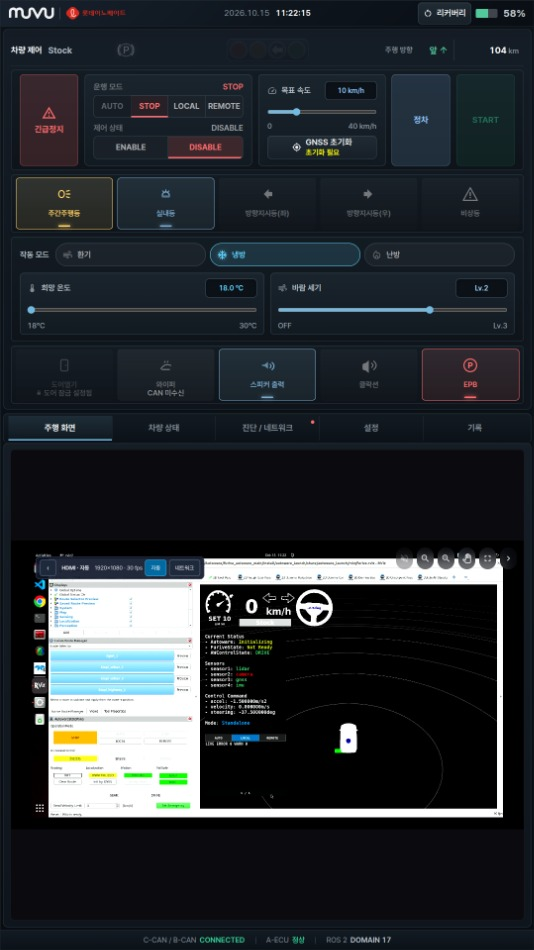
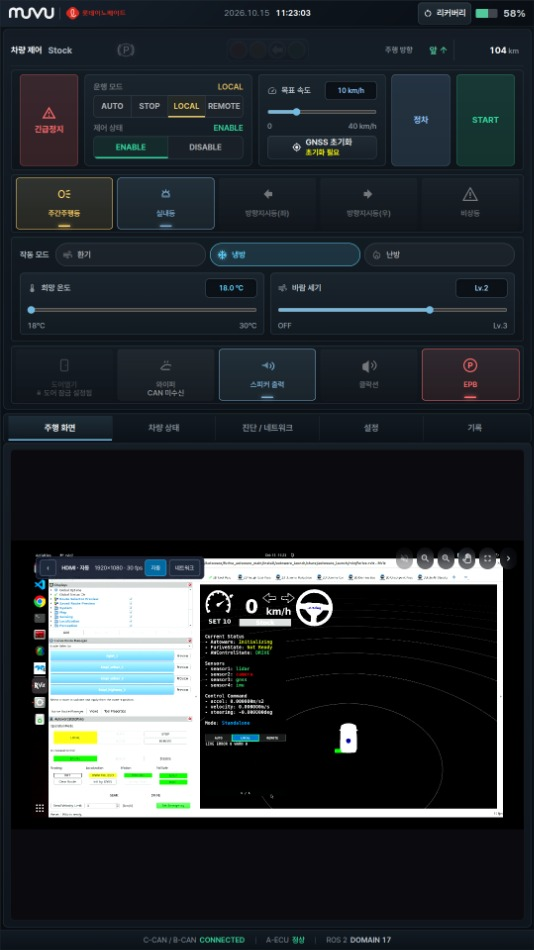
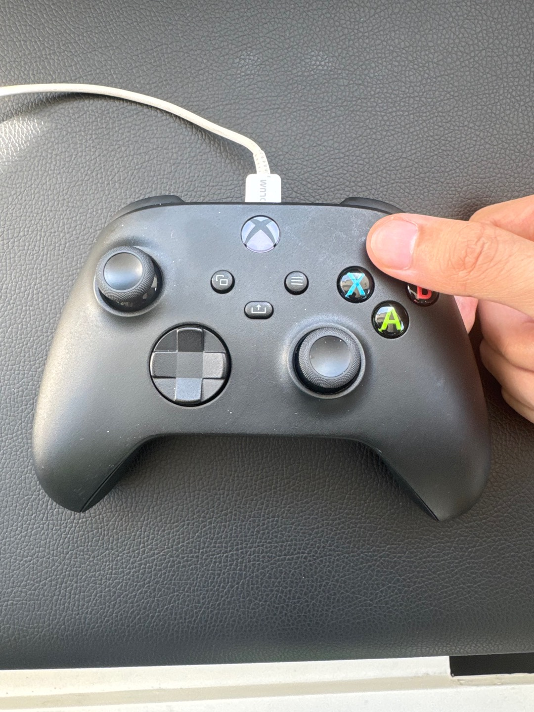
LOCAL 전환 후에도 차량 제어가 Stock일 수 있습니다. 다음 단계에서 제어기를 연결하고 좌측 상단의 Ready를 확인합니다.
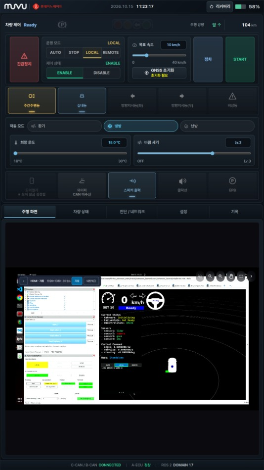
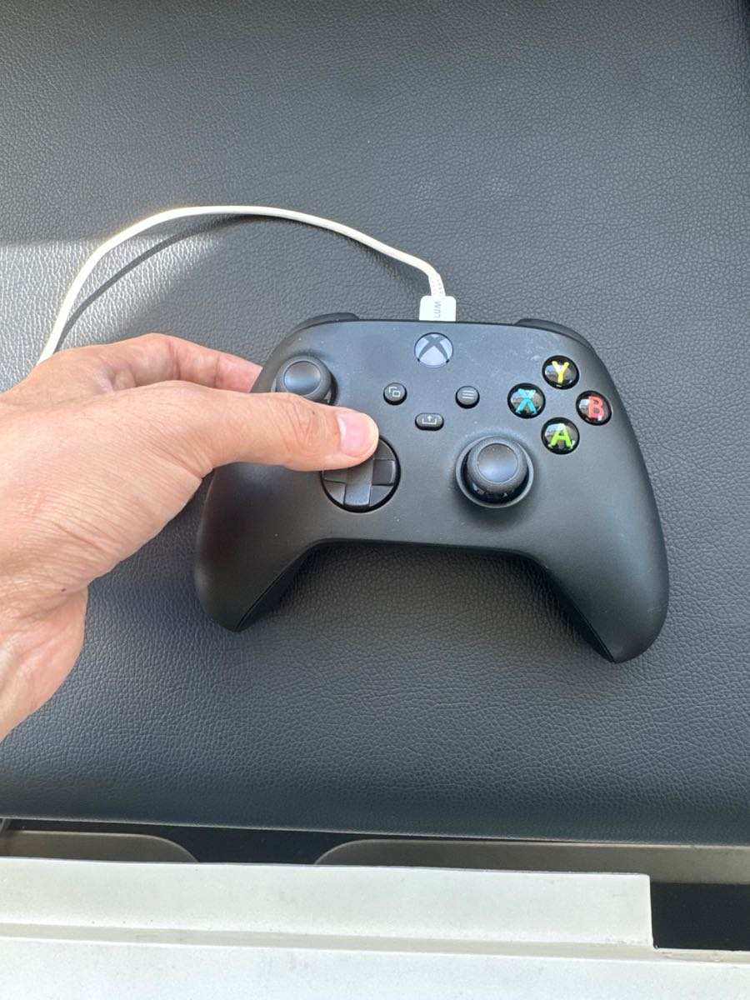
Ready를 확인한 뒤 진행합니다. 여기서 Ready는 차량 제어 상태의 확인 항목입니다. 화면 아래 Autoware의 모든 준비가 완료됐다는 뜻으로 읽지 않습니다. 기어 조작은 정차 상태에서 수행합니다.
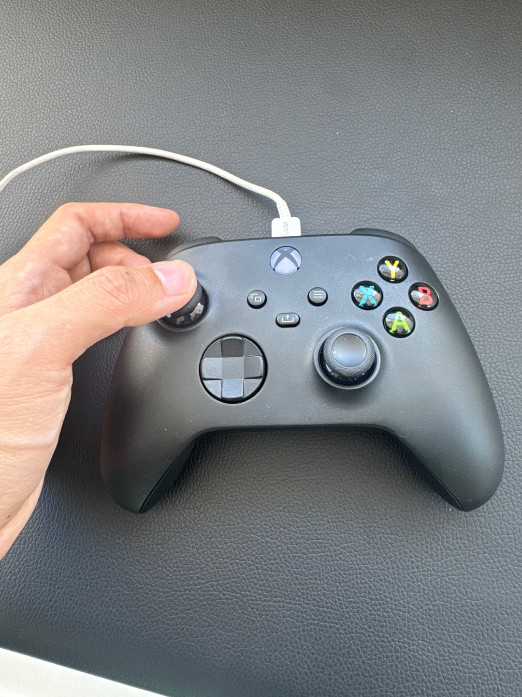
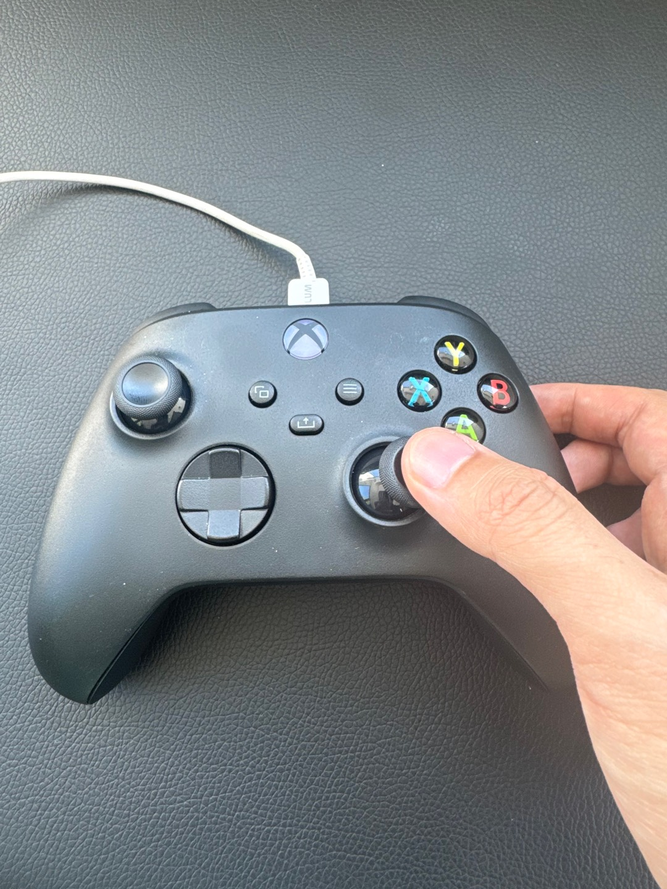
| 확인 항목 | 다음 단계로 진행하기 전 확인할 결과 |
|---|---|
| 이동 제어 | 조작에 맞게 차량이 반응하고 의도하지 않은 움직임이 없음 |
| 조향 제어 | 좌·우 조작과 실제 차량의 조향 반응이 일치함 |
| 정차 | 현재 속도와 실제 차량의 정지 상태를 함께 확인함 |
| 상태 유지 | Ready가 유지되고 Emergency·통신 이상이 없음 |
전진 기어 상태에서 시작합니다. 전진·후진 조작부 사진은 스틱 위치 안내입니다. 후진 기어 전환 방법은 이 절차에 포함하지 않습니다. 선택 기어와 실제 이동 방향을 확인하며 조작합니다.
반응 지연·반대 방향 동작·의도하지 않은 움직임이 있으면 시험을 중단하고, 위험한 경우 즉시 긴급정지합니다.
수동 제어 확인을 마치고 차량이 정차한 상태에서 진행합니다.
이 문구는 현장·원격 간 확인을 위한 예시입니다.
carvision 연결과 REMOTE 전환을 모두 확인합니다. 영상이 보이는 것만으로 제어권 인수를 판단하지 않습니다. 연결 또는 차량 상태가 확인되지 않으면 전달을 진행하지 않습니다. 전달 후 현장 조이스틱으로 동시에 주행 입력을 하지 않습니다.
사진 속 목표 속도 10 km/h, 배터리 잔량과 주행거리는 해당 시점의 표시값입니다. 실제 운용 속도는 현장 운용 기준을 따릅니다.
제어기가 연결되지 않았거나 원격지 연결이 되지 않은 경우 Emergency가 발생할 수 있습니다. 통신 장애, 차량 장애, Autoware 장애도 Emergency 발생 원인입니다. Emergency 발생 시 차량은 즉시 정차 동작을 수행하며, 운용자는 실제 정차 여부를 확인합니다.
| 확인 대상 | 먼저 확인할 내용 |
|---|---|
| 제어기 연결 | 방향키 오른쪽 조작 후 Ready가 확인됐는지, 현재 연결이 유지되는지 |
| 원격 연결 | carvision 접속과 원격 운용자의 연결 상태가 유지되는지 |
| 통신·차량·Autoware | MGMT의 진단 / 네트워크, 차량 상태 및 Autoware 이상 표시 |
화면 응답이 없거나 갱신이 멈춘 상태를 정상으로 판단하지 않습니다. 화면 확인이 어려우면 현장에서 차량 상태를 확인하고 필요한 비상정지 조치를 우선합니다.
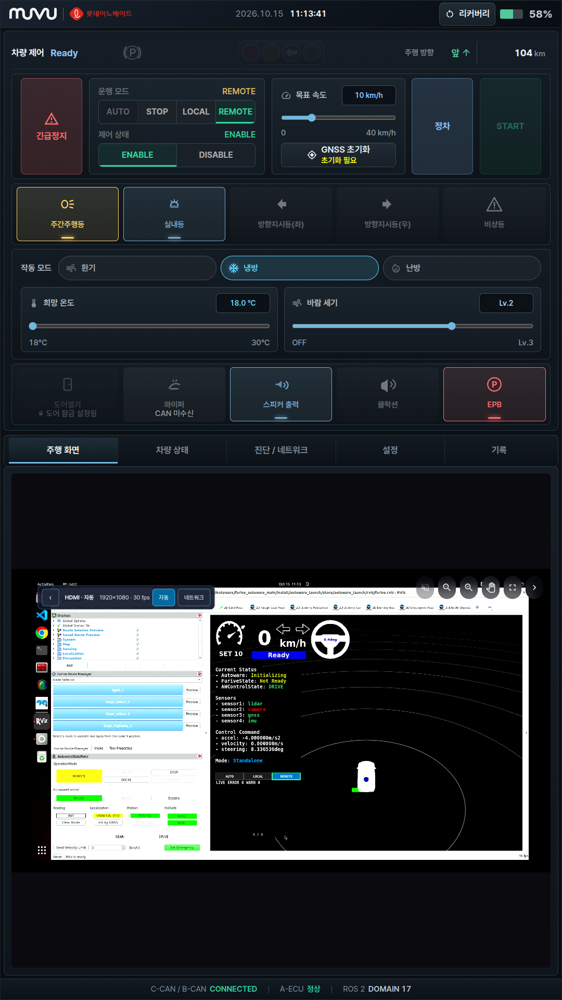
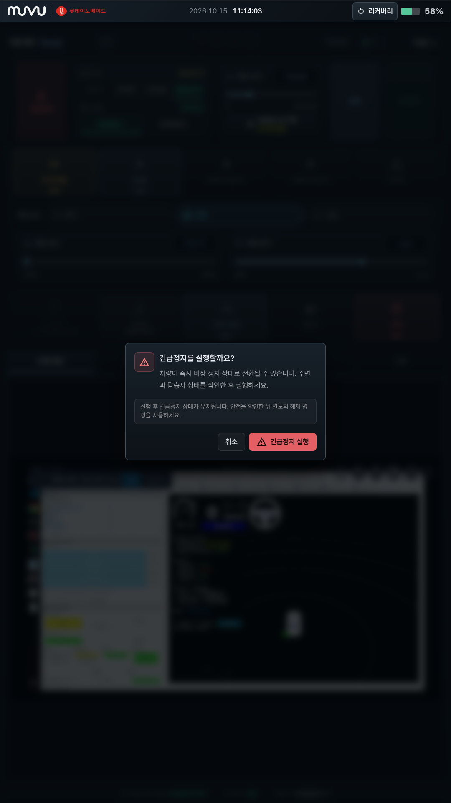
확인 창 안내 차량이 즉시 비상 정지 상태로 전환될 수 있습니다. 실행 후 긴급정지 상태가 유지되며, 안전을 확인한 뒤 별도의 해제 명령을 사용합니다.
즉시 위험을 차단해야 하거나 MGMT가 응답하지 않으면 차량 내 물리 비상정지 버튼을 사용합니다.
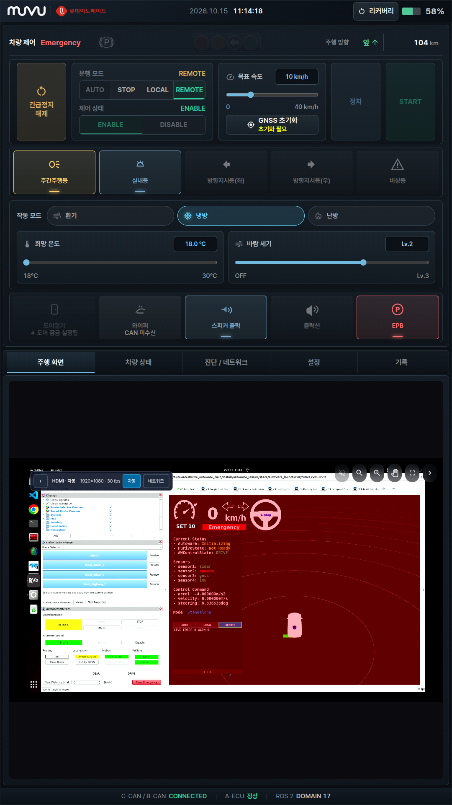
긴급정지 해제 버튼이 보이는 것은 해제해도 된다는 뜻이 아닙니다. 원인 조치와 현장 안전 확인을 마치고 차량의 별도 해제·재개 절차를 따릅니다. 필요 시 담당자에게 점검을 요청합니다.
화면 표시와 실제 정차를 함께 확인합니다. Emergency 문구 또는 명령 전송 결과만으로 정차가 완료됐다고 판단하지 않습니다. 차량이 멈추지 않으면 물리 비상정지 버튼을 누릅니다.
즉시 차량을 정지시켜야 할 때는 차량 내 물리 비상정지 버튼을 누릅니다. MGMT 화면을 사용할 수 없거나 정차 반응이 확인되지 않는 상황에서도 접근 가능한 버튼 위치를 미리 알아둡니다.
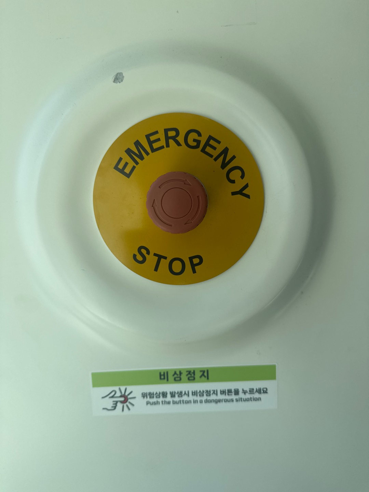
버튼의 복귀 조작과 차량의 긴급정지 해제·주행 재개는 별도 절차를 따릅니다. 원인과 안전 상태가 확인되지 않은 상태에서 버튼을 복귀시키거나 운행을 재개하지 않습니다.
비상 상황에서는 정차 조치를 우선합니다. MGMT 확인 창을 조작하느라 물리 비상정지 조치를 늦추지 않습니다.
| 순서 | 조작 | 확인 후 다음 단계로 진행 |
|---|---|---|
| 1 | Autoware 부팅 후 MGMT 확인 | 초기 차량 제어·모드·제어 상태 확인 |
| 2 | Y 또는 MGMT LOCAL | LOCAL 전환 확인 |
| 3 | 방향키 오른쪽 → | 좌측 상단 차량 제어 Ready |
| 4 | 방향키 위쪽 ↑ | 정차 상태에서 전진 기어·방향 확인 |
| 5 | 좌측 상단 스틱 / 우측 하단 스틱 | 이동·조향 확인 후 실제 정차 |
| 6 | 원격 운용자가 carvision 연결·전달 요청 | 현장·원격이 연결 상태 확인 |
| 7 | 현장에서 MGMT REMOTE | REMOTE / Ready / ENABLE과 원격 제어 가능 상태 확인 |
| 8 | 현장·원격이 전달 완료 확인 | 원격 주행 시작 |
화면 조작 MGMT 긴급정지 → 확인 창의 긴급정지 실행 → Emergency와 실제 정차 확인
물리 조작 차량 내 비상정지 버튼 누름 → 실제 정차 확인 → 현장·원격 상황 공유
| 상황 | 다음 행동 |
|---|---|
| LOCAL로 바뀌지 않음 | 현재 모드와 조이스틱·MGMT 연결 상태 확인. 전환 확인 전 주행하지 않음 |
| 제어기 연결 후 Ready가 안 됨 | 현재 연결·차량 제어 상태 점검. 전진·주행 조작으로 넘어가지 않음 |
| 스틱 조작과 차량 반응이 다름 | 시험 중단. 위험 시 긴급정지 후 이동·조향·기어 상태 점검 |
| carvision 미연결 또는 연결 불명확 | REMOTE 제어권 전달 보류. 현장·원격 연결 확인 |
| REMOTE 전환 후 원격 제어가 안 됨 | 주행 입력 중단. 현재 모드·Ready·연결 상태 확인. 결과가 불명확한 명령을 반복하지 않음 |
| Emergency 발생 | 실제 정차·주변 안전 확인 후 원인 점검. 해제·재개는 별도 절차 적용 |
| MGMT가 응답하지 않거나 영상이 멈춤 | 화면으로 정상 판단하지 않음. 현장 확인, 위험 시 물리 비상정지 |
이상 발생 시 발생 시각, 운행 모드, 차량 제어 상태, 연결 상태, 직전 조작, 실제 차량 반응을 기록해 점검 담당자에게 전달합니다.
사진에 표시된 GNSS 초기화 필요, 와이퍼 CAN 미수신 등은 촬영 시점의 상태입니다. 해당 사진을 모든 장치의 정상 상태 예시로 사용하지 않습니다.